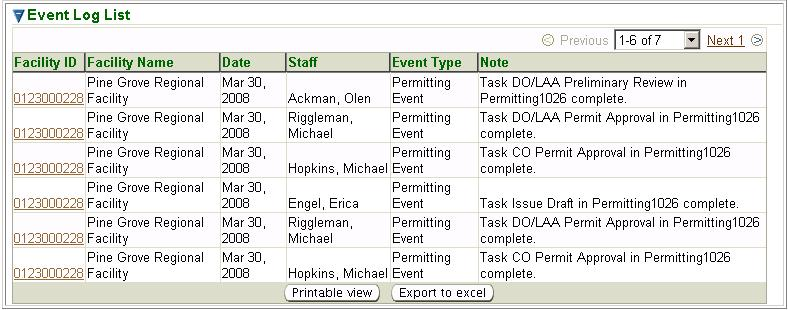

Previous Topic
Next Topic
| Tools |
Previous Topic |
Next Topic |
The system’s second-level menu, Event Log, of the Tools tab allows you to search for events associated with a facility(s). This could be the completion of a task by internal Ohio EPA staff associated with a permit (e.g., preliminary completeness review) or even a submittal of an application from an external user. Events are stored, for each facility, in the third-level menu, Event Logs, of their Facility Profile. You can also create a New Event through the third-level menu of this page. For help with creating events, see the New Event Help page.
This topic contains the following sections:
You may search for events on the basis of any or all of the criteria listed below. You can fill in or choose a value for whichever fields you want to use to restrict your search.
After you complete the criteria for the search you want, and
click  ,
the system searches all of the records for all the events stored in its
database, selects the ones that meet ALL of the
criteria you have
specified, and returns summary information about that event(s) in a
datagrid. The datagrid below is the result of a search submitted with
search criteria specified to select all Permitting
events for Facility
ID 0123000228.
,
the system searches all of the records for all the events stored in its
database, selects the ones that meet ALL of the
criteria you have
specified, and returns summary information about that event(s) in a
datagrid. The datagrid below is the result of a search submitted with
search criteria specified to select all Permitting
events for Facility
ID 0123000228.

Event Log Search Results Datagrid
The summary data returned includes columns providing Facility ID, Facility Name, Date, Staff, Event Type and Note for all the events that matches your search criteria.
This datagrid supports all the common functionality for datagrids as described in Common User Interface Elements - Datagrids
Copyright © 1996, 2004, Oracle. All rights reserved.